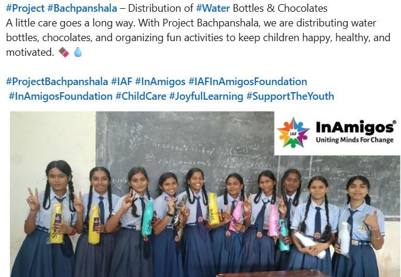
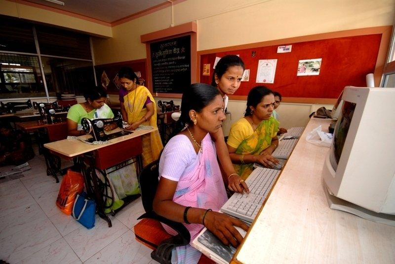
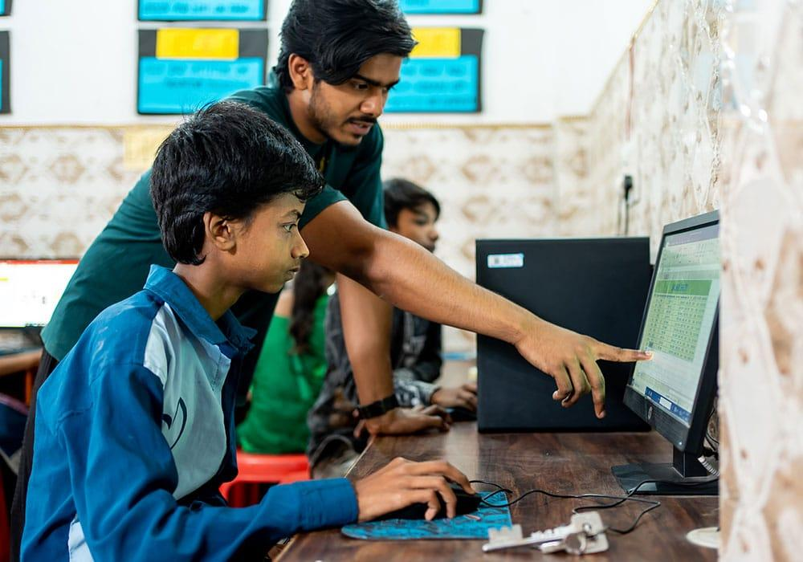

Our Projects
Six initiatives focused on different areas of social welfare and community development.

Project SEVA
Project SEVA focuses on helping underprivileged communities through food and clothing distribution. It aims to support people facing basic necessities and everyday challenges.

Project BACHPANSHALA
Project BACHPANSHALA focuses on children's education by supporting school learning, basic digital literacy and life skills for underprivileged children.

Project JEEV
Project JEEV is dedicated to animal welfare. Its activities include feeding, rescuing and protecting stray animals through volunteer participation.

Project UDAAN
Project UDAAN works towards women's empowerment through skill development, self-help group collaboration, financial independence and awareness activities.

Project PRAKRITI
Project PRAKRITI promotes environmental conservation through tree plantation, sustainability awareness and support for eco-friendly agricultural practices.

Project VIKAS
Project VIKAS focuses on youth development through internships and professional skill training in areas such as digital marketing, finance, research and content writing.